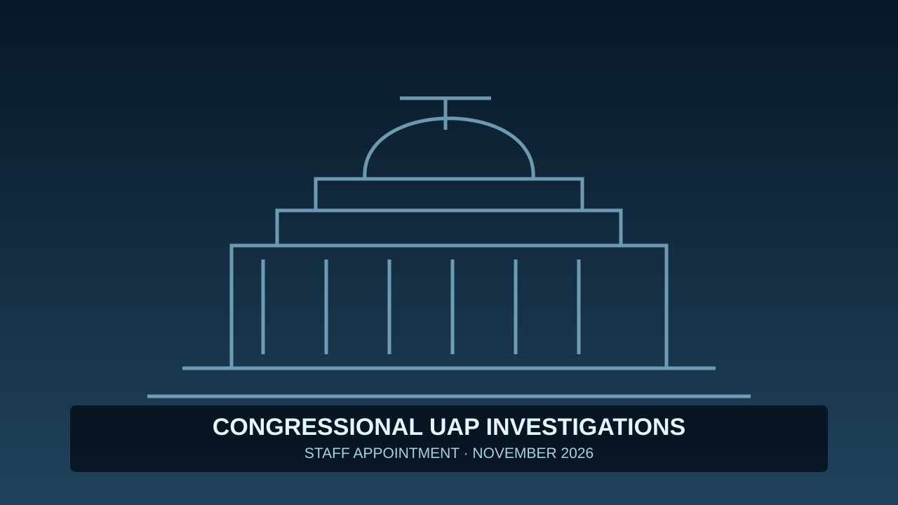

Congressional oversight · November 6, 2026
UAP Whistleblower Jake Barber Joins Rep. Eric Burlison's Congressional Staff

Investigative outlet PARADIGM reports that Jake Barber, a former Air Force servicemember who has publicly made claims about unusual recovery operations, joined U.S. Representative Eric Burlison's congressional staff to assist with investigations of unidentified anomalous phenomena (UAP). Burlison spokesperson Nate Lucas confirmed the appointment to PARADIGM.
What is confirmed and what remains uncertain
The confirmation reported by PARADIGM establishes the appointment as an attributable congressional personnel development. The article does not independently establish Barber's exact start date, formal title, or the scope of his duties. GreyAlien has not reviewed original employment records.
Personnel chronology
PARADIGM reports that David Grusch previously worked with Burlison's office and left around Labor Day 2026. That approximate departure date is attributed to the outlet; it is not an independently verified personnel record. Barber's appointment should not be read as proof of any specific congressional investigative finding.
Barber's prior claims and SkyWatcher
Barber has previously described alleged involvement in retrieving objects he characterized as non-human craft and has been associated with the SkyWatcher initiative. These claims are separate from the confirmed appointment and remain unverified by publicly available independent evidence. Congressional employment does not authenticate recovery claims or establish that SkyWatcher has demonstrated an extraordinary capability.
Why this matters for GreyAlien
The development adds a documented relationship among Barber, Burlison's congressional office, and ongoing UAP oversight. It is relevant to tracking the people involved in investigations, but does not constitute evidence for the underlying extraordinary allegations.
Original source and connected records
Ben Schreckinger, PARADIGM — original investigation (November 6, 2026).
Permanent research record · Jake Barber · Eric Burlison · David Grusch.